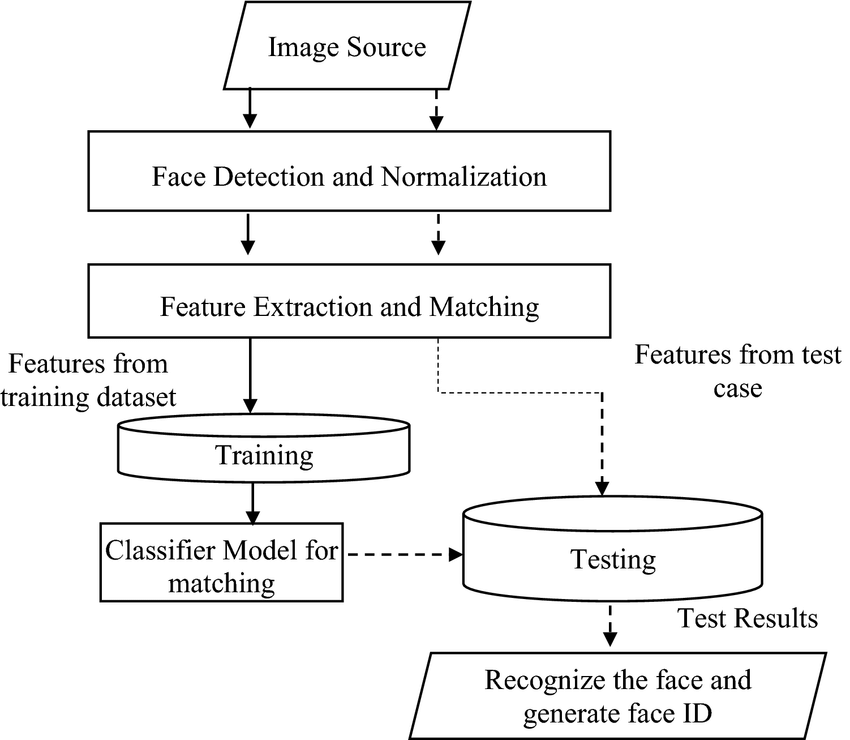

Let's learn about facial recognition issues
Facial recognition is a way of identifying or confirming an individual’s identity using their face. Facial recognition systems can be used to identify people in photos, videos, or in real-time. Facial recognition is a category of biometric security. Other forms of biometric software include voice recognition, fingerprint recognition, and eye retina or iris recognition. The technology is mostly used for security and law enforcement, though there is increasing interest in other areas of use.
"A US government study suggests facial recognition algorithms are far less accurate at identifying African-American and Asian faces compared to Caucasian faces. African-American females were even more likely to be misidentified, it indicated. It throws ... doubt on whether such technology should be used by law enforcement agencies. [it was discribed as] "shocking". The National Institute of Standards and Technology (Nist) tested 189 algorithms from 99 developers, including Intel, Microsoft, Toshiba, and Chinese firms Tencent and DiDi Chuxing."
Look at the source
-The image is: "Pictures and selfies submitted by courier Pa Edrissa Manjang. Who is taking legal action against Uber Eats, supported by the ADCU"- Relating to 'When has it failed?' segment.
Look at the source
Facial recognition is often used in security settings now, as a form of identification or authentication. However, some devices often use this to allow access to areas, -think of a door- if it doesn't work properly or discriminatly then we have a large issue.
Opponents of facial recognition suggest that the software is useful because alongside identifying criminals, it can monitor known criminals and help identify child victims of abuse. Increasing security at airports or border crossings. The most long-running type of facial recognition software runs a photo through a government-controlled database, such as the FBI’s database of over 400 million photos, which includes driver’s licenses from some states, to identify a suspect. Local police departments use a variety of facial recognition software, often purchased from private companies. Facial recognition is helpful for organizing photos, useful in securing devices like laptops and phones, and beneficial in assisting blind and low-vision communities. It can be a more secure option for entry into places of business, fraud protection at ATMs, event registration, or logging in to online accounts. Advertising and commercial applications of facial recognition promise a wide array of supposed benefits, including tracking customer behavior in a store to personalize ads online - which some may find devious. Brenda Leong, senior counsel and director of artificial intelligence and ethics at Future of Privacy Forum, suggested in an interview that proponents point to facial recognition as a replacement for loyalty programs or gated access: “You just walk through a set of cameras and all those things happen very seamlessly, sports arenas, event venues, amusement parks, all those places either are using or would have ideas of ways to use it similarly.”
As previously described on this page, facial recognition works less accurately upon dark skin tones, whether that is due to error or poor testing/programming is not ours to say however, some companies use this as a form of identification. Uber uses a systen they call "Real-Time ID Check" which it uses to varify that their drivers are signing up in good intent. It stops them from "sharing" accounts -E.g. Another person can't drive on your behalf- as private driving licences are required and are part of a safety procedure in the UK. Their system works in reality by this system with a human review element, if a driver's photo doesn't match it "waitlists" them for 24 hours, so they can't do drives for the day. If another failiure occurs their account is deactivated, key point being: This occurs at a much higher rate upon minority ethnic groups which Transport London claims "94% of licensed (hire) drivers are ... black, asian and minority ethnic". This system often doesn't work for the people most likely to be using it and in cases, prevents these individuals from earning an income.
The camera detects and locates the image of a face, either alone or in a crowd. The image may show the person looking straight ahead or in profile.
Next, an image of the face is captured and analyzed. Most facial recognition technology relies on 2D rather than 3D images because it can more conveniently match a 2D image with public photos or those in a database. The software reads the geometry of your face. Key factors include the distance between your eyes, the depth of your eye sockets, the distance from forehead to chin, the shape of your cheekbones, and the contour of the lips, ears, and chin. The aim is to identify the facial landmarks that are key to distinguishing your face.
The face capture process transforms analog information (a face) into a set of digital information (data) based on the person's facial features. Your face's analysis is essentially turned into a mathematical formula. The numerical code is called a faceprint. In the same way that thumbprints are unique, each person has their own faceprint.
Your faceprint is then compared against a database of other known faces. For example, the FBI has access to up to 650 million photos, drawn from various state databases. On Facebook, any photo tagged with a person’s name becomes a part of Facebook's database, which may also be used for facial recognition. If your faceprint matches an image in a facial recognition database, then a determination is made.
Of all the biometric measurements, facial recognition is considered the most natural to use. Intuitively, this makes sense, since we typically recognize ourselves and others by looking at faces, rather than thumbprints and irises. It is estimated that over half of the world's population is touched by facial recognition technology regularly.
Poor facial recognition can be made in ignorance, this lack of care and empathy whilst programming could cause people to lose access to valuable things or -not be able to use the code. People can be locked out of their home, phone or even their saftey devices.
This needs to be fixed to prevent some poor people from being discriminated against!
Facial recognition works best on who it is trained on!